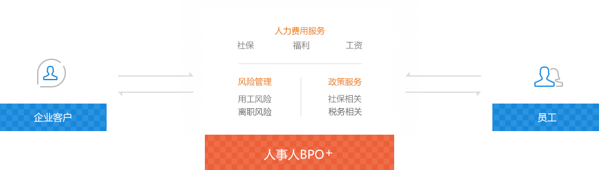
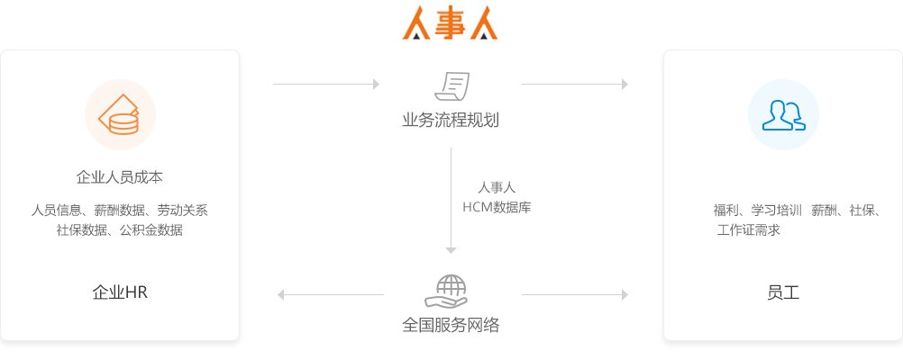
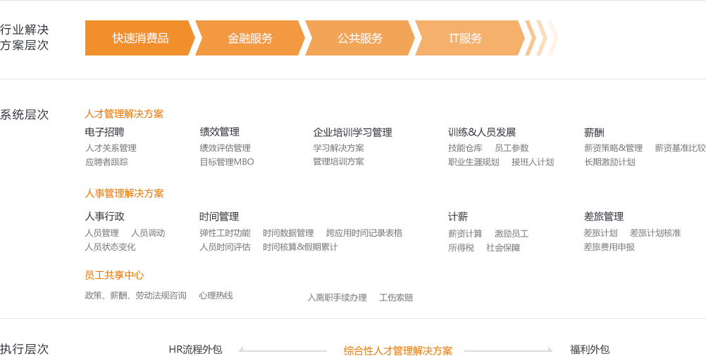

人事人BPO+，是在传统BPO业务的基础上，通过SAAS的方式处理端到端的数据，并延伸至服务生态中的每个单元即员工个体，用更高效的互联网技术为客户实现商业流程的服务，并输出商业价值。
BPO是将公司的部分业务对外承包，即把原来由公司内部处理的某些业务交给公司外部实体去完成。因此，要求是“长期合同”的关系，这就要求进行BPO服务的机构，要深入的了解企业客户的行业特性及其业务逻辑，在进行人力优化方案执行的过程中，同时要对企业资金流、产业链上下游关系进行多维度的规划，以便能够真正实现人力成本的降低和生产效率的提升。
显然，在BPO业务实施中，数据的分析和处理，已经成为决定BPO核心价值的关键因素，因此，人事人BPO+正是运用了互联网的规模化和便捷性，让数据交互更符合行业规律，业务标准更具可执行性；我们相信，随着互联网技术的不断提升，新一代的BPO+一定助力中国企业进一步的发展。



启动时间 ：2015年
服务城市：北京、上海、广州、南京、成都等16个城市
立即咨询
×终于等到你，很高兴为您服务，您可以通过以下方式联系我们
北京服务中心
地址:朝阳区soho现代城A座3702
电话: 400-888-0556
Email: severs@renshiren.com